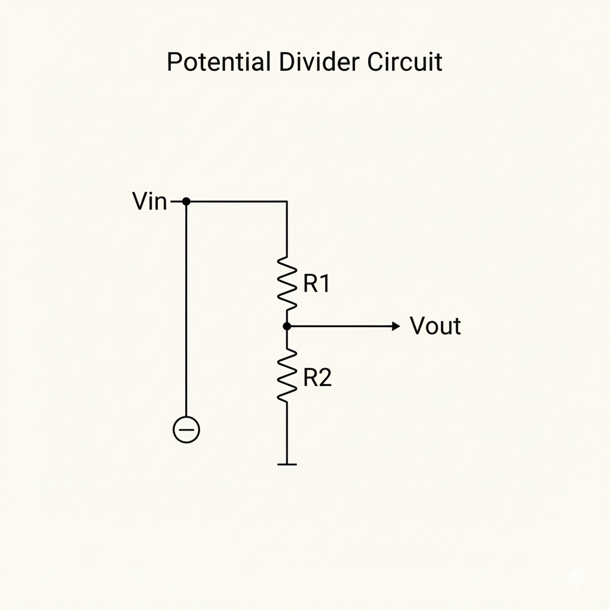

🌱 The Watering Can Problem
You have one watering can with water. You have two plants: a tiny orchid seedling and a large fern. Do you give the same amount of water to both?
💡 Electricity works exactly the same way. Your smart garden sensor cannot work with the full 7.4V from the battery. It needs a smaller, more delicate voltage—just like the tiny orchid needs less water. We need a circuit that divides the voltage intelligently.
That circuit is called a Potential Divider, and it is the single most important concept in this entire project.
Every sensor in your Smart Garden—the light sensor, the temperature sensor—works because of what you learn today. Without the potential divider, you have no sensing. Without sensing, you have no Smart Garden.
🎯 What You Will Learn Today
Learn how to calculate total resistance when resistors are connected end-to-end.
Learn how combined resistance decreases when resistors are side-by-side.
Use Vout = (R₂ / (R₁ + R₂)) × Vin to predict sensor voltages.
🔗 Resistors in Series: Adding Resistance
When resistors are connected end-to-end (in a chain), they are in series. The current flows through one, then the next, then the next.

The Rule
Total resistance is the sum of all individual resistors:
💬 Series resistors are like traffic jams stacked one after another on the road. Each one slows the current down a little more. The total slowdown is just the sum of all of them.
Worked Example
Three resistors in series: 100Ω, 120Ω, and 220Ω. What is the total resistance?
RT = 100 + 120 + 220 = 440Ω
If 7.4V is applied across this chain, what current flows?
I = V / RT = 7.4V / 440Ω ≈ 16.8 mA
Why Series Increases Total Resistance
Each resistor opposes current flow independently. When arranged in series, their opposition adds up.
Key Points
- Total resistance ALWAYS increases with series connection
- The same current flows through all resistors
- Voltage SPLITS across the resistors (Kirchhoff's Voltage Law)
- Larger resistor gets larger voltage drop
Example calculation: If 100Ω, 120Ω, and 220Ω are in series with 7.4V:
- Total R = 440Ω
- Current = 7.4V / 440Ω ≈ 16.82 mA
- Voltage across 220Ω = 16.82mA × 220Ω = 3.70V
- Voltage across 120Ω = 16.82mA × 120Ω = 2.02V
- Voltage across 100Ω = 16.82mA × 100Ω = 1.68V
- Sum = 3.70 + 2.02 + 1.68 = 7.4V ✓
⊥ Resistors in Parallel: Reducing Resistance
When resistors are connected side-by-side, they are in parallel. The current has multiple paths to follow.

The Rule (Two Resistors)
For two resistors in parallel, use this formula:
💬 Parallel resistors are like opening extra checkout lanes at a supermarket. More lanes = less total waiting. More paths for current = less total resistance. The combined resistance is ALWAYS LESS than the smallest individual resistor.
Worked Example
Two resistors in parallel: 120Ω and 100Ω. What is the combined resistance?
RT = (120 × 100) / (120 + 100)
= 12,000 / 220
≈ 54.5Ω
✓ Notice: 54.5Ω is less than BOTH 100Ω and 120Ω. This always confirms your calculation is correct.
Why Parallel Decreases Total Resistance
Parallel connections create additional paths for current. More paths = easier flow = less total resistance.
Key Points
- Total resistance ALWAYS decreases with parallel connection
- The same voltage appears across ALL parallel resistors
- Current SPLITS between the branches
- Smaller resistor gets more current (inverse relationship)
General Rule (3+ Resistors)
Check your work: Total resistance MUST be less than the smallest resistor. If it's not, you made an error!
⚖️ The Potential Divider: THE KEY CONCEPT
This is the heart of this entire session. Take your time with this.
A potential divider is two resistors connected in series across a supply voltage. The voltage is "shared" between them—and we tap the voltage from the middle point between the two resistors.

The Formula
Read this aloud: "V out equals R 2 divided by the total resistance, multiplied by the supply voltage. R 2 gets a share of V in that is proportional to its size relative to the total. A big R 2 takes a big share. A small R 2 takes a small share."
Worked Example 1: Fixed Resistors
R₁ = 10kΩ, R₂ = 18kΩ, Vin = 7.4V. What is Vout?
Vout = (18,000 / (10,000 + 18,000)) × 7.4
= (18,000 / 28,000) × 7.4
= 0.643 × 7.4
= 4.76V
💬 Key insight: 7.4V goes in at the top. 4.76V comes out at the middle. We have divided the voltage—without using a single extra battery or power source. Just two resistors. Elegant.
Worked Example 2: The Garden Preview (MOST IMPORTANT)
Now imagine R₁ is our LDR (light sensor). In bright light, the LDR has LOW resistance: 1kΩ. R₂ is a fixed 10kΩ. Vin = 7.4V. What is Vout in bright light?
Vout = (10,000 / (1,000 + 10,000)) × 7.4
= (10,000 / 11,000) × 7.4
= 6.73V
In darkness, the LDR resistance rises to 50kΩ. Same R₂ = 10kΩ. What is Vout in darkness?
Vout = (10,000 / (50,000 + 10,000)) × 7.4
= (10,000 / 60,000) × 7.4
= 1.23V
⭐ THE BREAKTHROUGH ⭐
Bright light → HIGH resistance → HIGH Vout (6.73V)
Darkness → LOW resistance → LOW Vout (1.23V)
This changing voltage is our "sensor signal." In Week 6, we feed this signal to a transistor that switches on our pump. You have just understood how the entire sensing chain works.
🧮 Interactive Potential Divider Simulator
Experiment with different resistor values and see how Vout changes instantly.
❓ Check Your Understanding
Question 1: Series Calculation
Three resistors (100Ω, 150Ω, 250Ω) are connected in series. What is the total resistance?
Question 2: Parallel Property
When two resistors are in parallel, the total resistance is:
Question 3: Potential Divider Logic
In a potential divider, as R₂ gets larger relative to R₁, what happens to Vout?
Question 4: LDR Sensing
An LDR (light-dependent resistor) decreases its resistance in bright light. If the LDR is R₁ in your potential divider, what happens to Vout when the light gets brighter?
📊 Series vs. Parallel: Quick Reference
| Property | Series | Parallel |
|---|---|---|
| Total Resistance | Increases (sum of all) | Decreases (less than smallest) |
| Current | Same through all components | Splits between branches |
| Voltage | Splits across components | Same across all branches |
| Used in Our Project For | Potential divider, LED protection | — |
🛠️ Practice Computations
Exercise 1: Series Calculations
Calculate the total resistance:
R₁ = 47Ω, R₂ = 100Ω, R₃ = 220Ω (all in series)
Exercise 2: Parallel Calculations
Calculate the total resistance:
Two resistors in parallel: R₁ = 100Ω, R₂ = 100Ω
Exercise 3: Potential Divider
Calculate Vout:
R₁ = 10kΩ, R₂ = 4.7kΩ, Vin = 7.4V
📚 Vocabulary & Glossary
Master these terms—they are essential for understanding circuit behavior.
🎓 Wrap-Up: Consolidate Your Learning
Key Takeaways
Series resistors add up: RT = R₁ + R₂ + R₃. Total resistance increases.
Parallel resistors combine differently: 1/RT = 1/R₁ + 1/R₂. Total resistance DECREASES.
Potential divider formula: Vout = (R₂ / (R₁ + R₂)) × Vin. This formula lets us create sensors that respond to light, temperature, and other environmental changes.
Reflection
Bridge to Next Week
Next week: LDR & Thermistor — The Sensor
Sub-circuit
We replace one resistor in the potential divider with an LDR (light
sensor) or Thermistor (temperature sensor). The divider becomes a living sensor that responds to the
world.
YOU'VE MASTERED THE FOUNDATION!
This is the most mathematically demanding session of the bootcamp. But you did it. You understand how to divide voltage intelligently. You understand the formula that makes sensing possible. Next week, we turn this abstract math into a LIVING SENSOR.
📝 The "Exam Boss" Challenge
Past-Paper Style Question (IGCSE 4.4.4 — Potential Divider)
A potential divider is connected to a
12V supply.
R₁ = 10kΩ (between +12V and output node)
R₂ = 18kΩ (between output node and 0V)
(a) Calculate Vout using the potential divider formula. Show all working. (3 marks)
(b) A student replaces R₂ with a variable resistor and increases it from 1kΩ to 20kΩ. Describe what happens to Vout. (2 marks)
(c) In a garden sensor, R₁ is an LDR. Explain what happens to Vout when the garden gets bright sunlight. (2 marks)
Total: 7 marks
🔑 Answer Key (For Self-Checking)
Click to reveal answer key